TUHINI
⬇
Bukuria e fshatit Tuhin
Këtu mund të shihni disa pamje të bukura të fshatit tonë, natyrën,
shtëpitë tradicionale, vendet historike dhe aktivitetet e banorëve.
Fotografitë tregojnë bukurinë dhe kulturën e fshatit ndër vite.
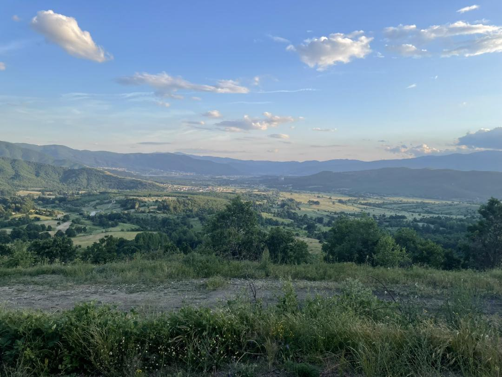
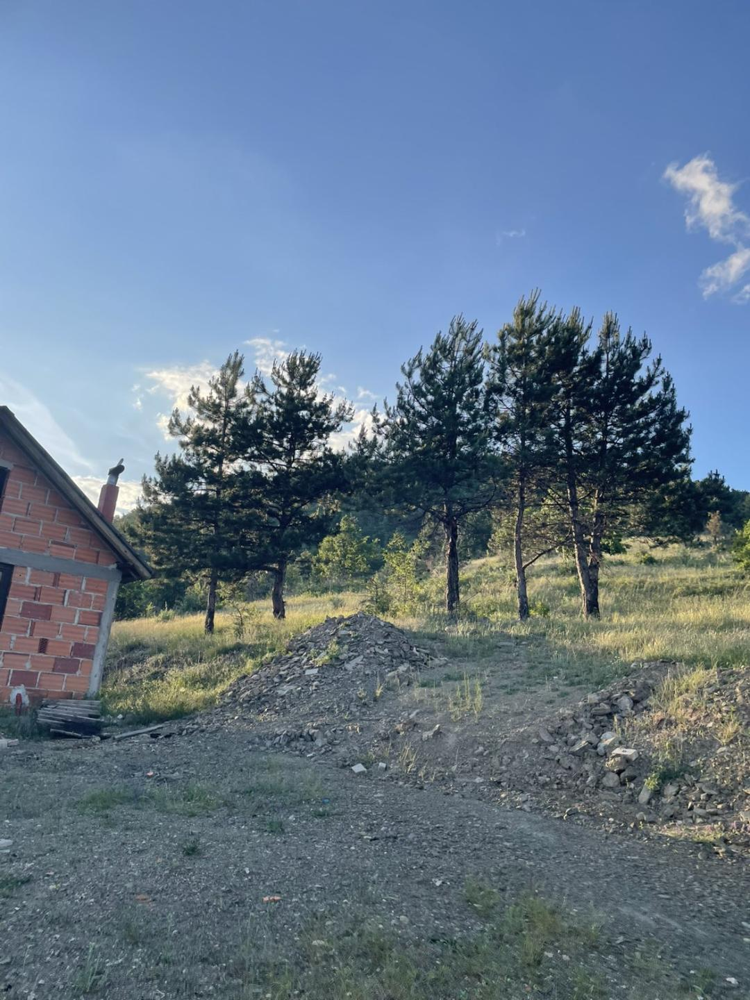
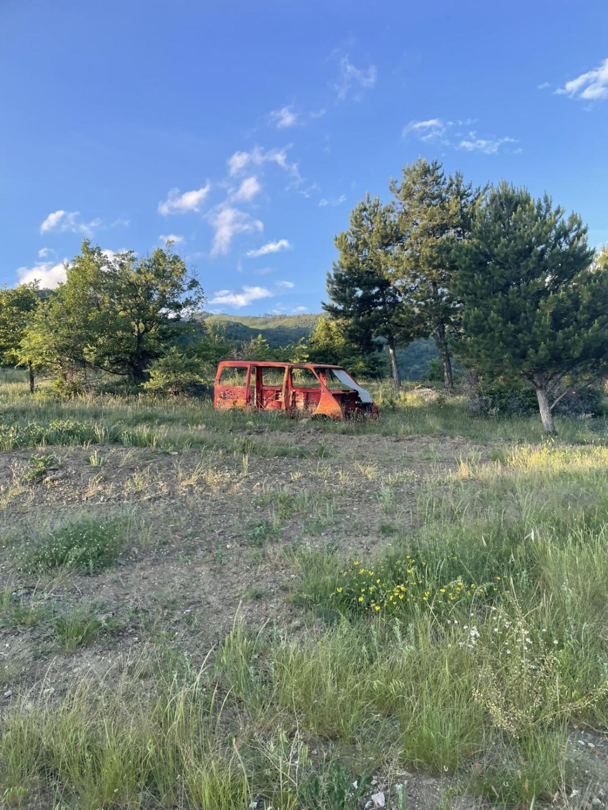
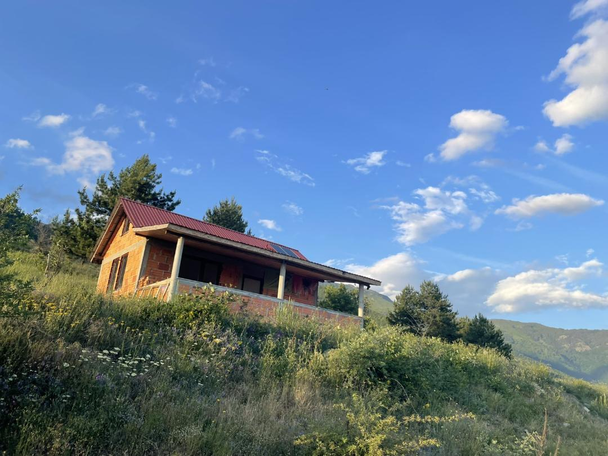
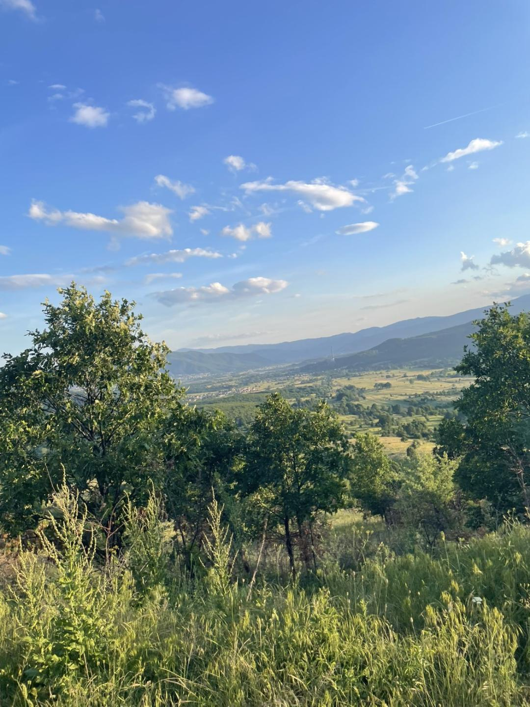
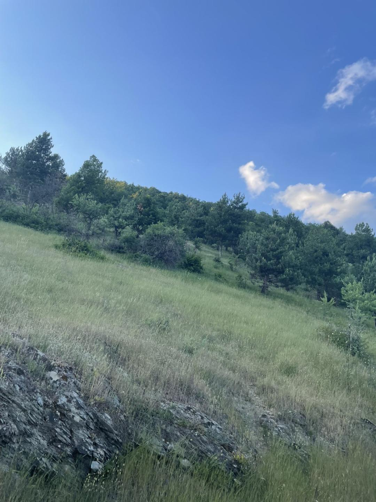

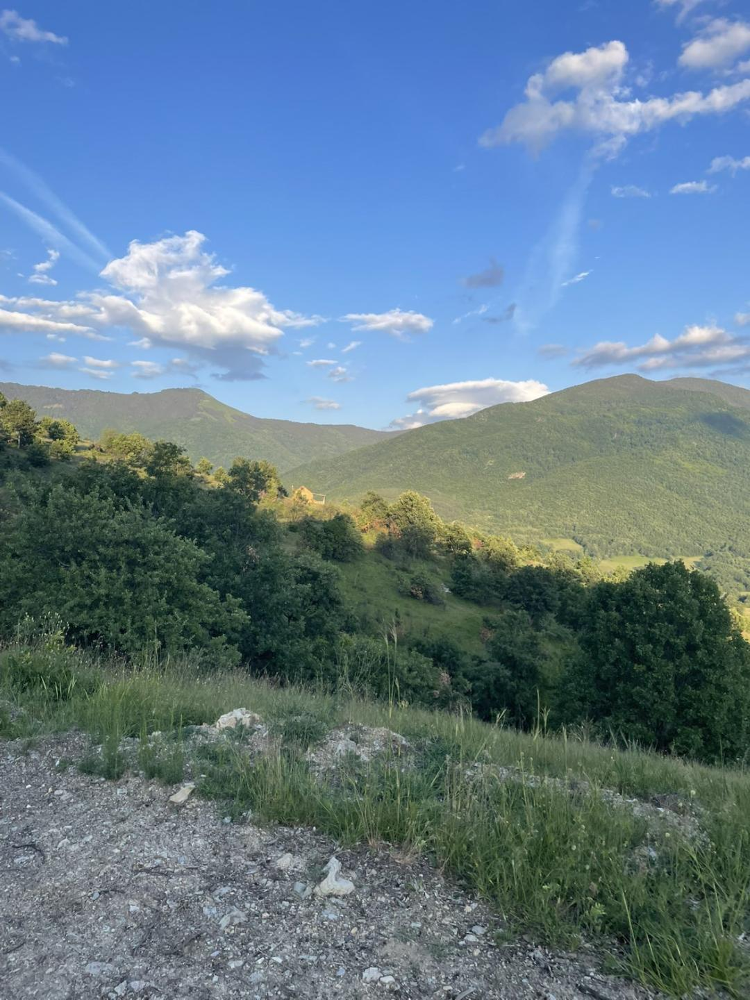
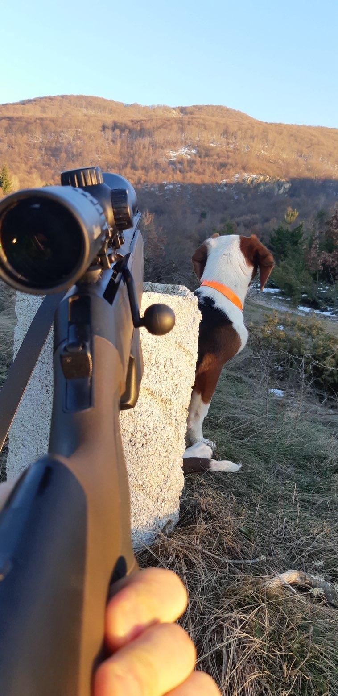
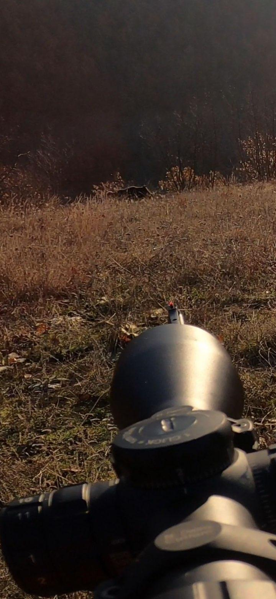
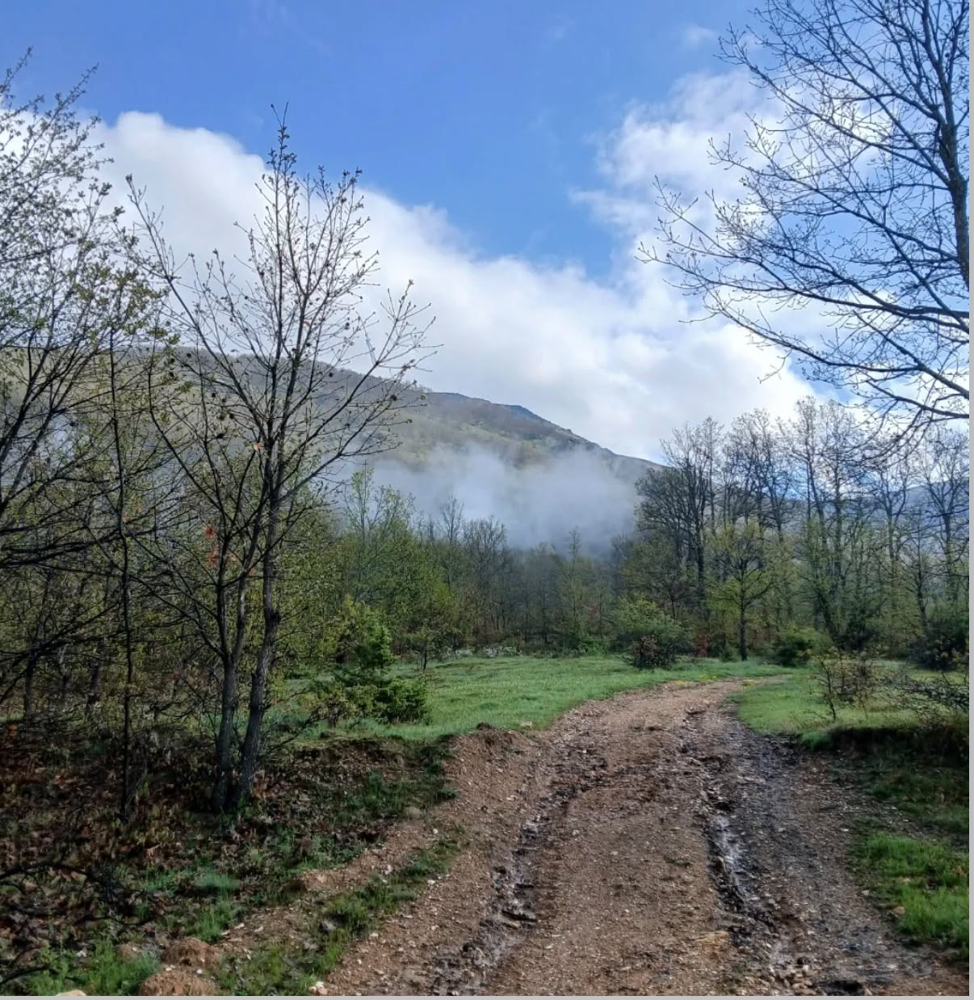
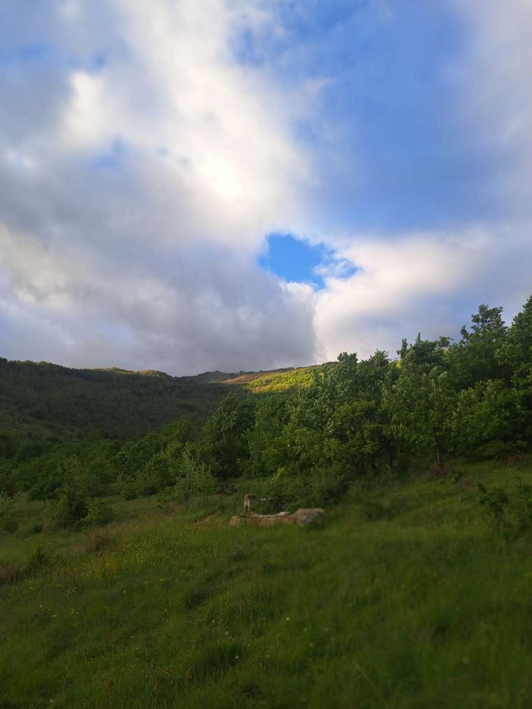
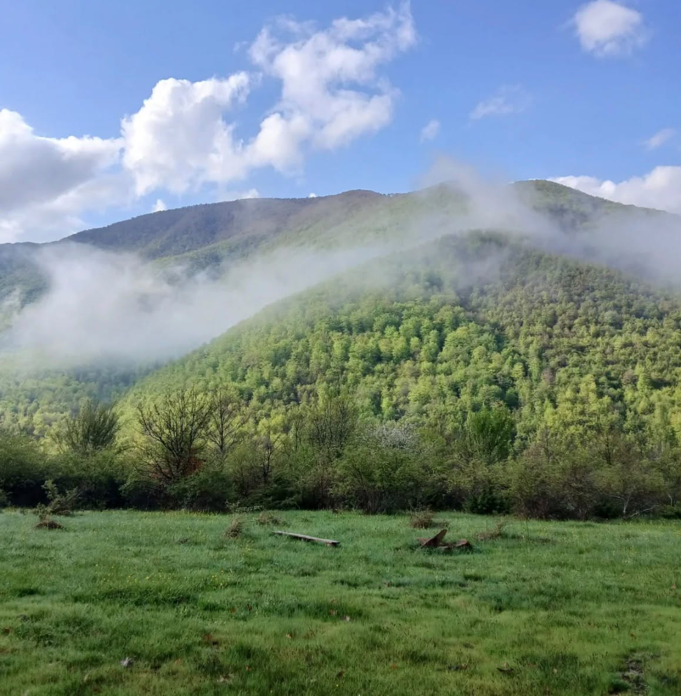
⬆